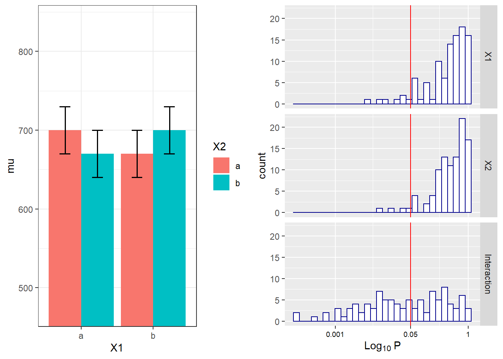
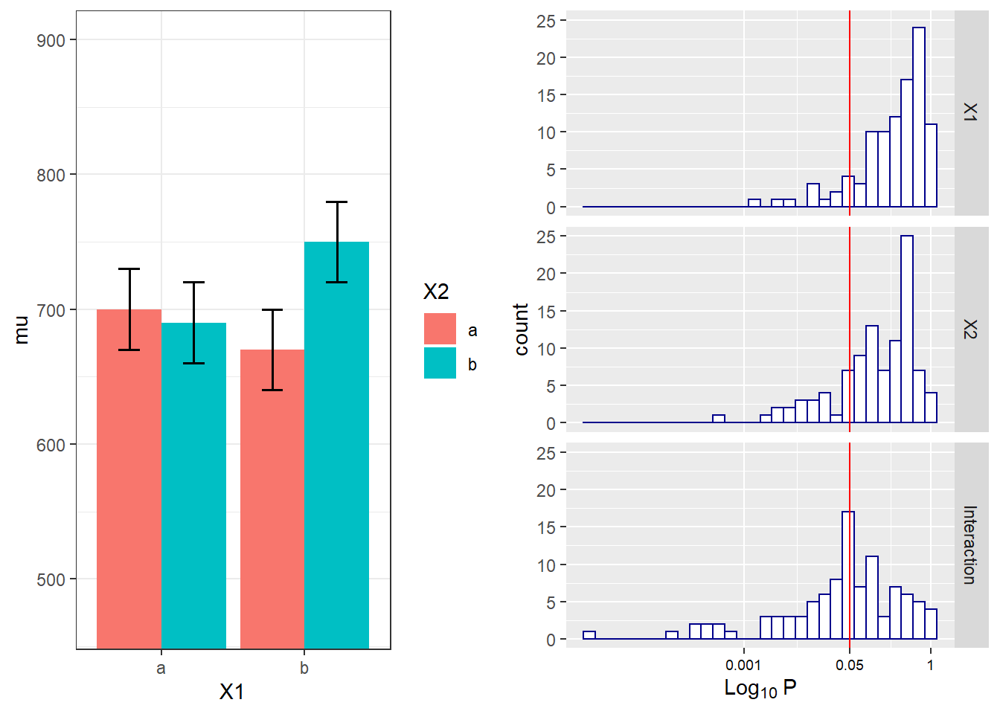

Chapter 9 Mixed ANOVA Part 2
9.1 Two by two ANOVA, within-within design
We can simulate a 2x2 ANOVA, both factors manipulated within participants, with a specific sample size and effect size, to achieve a desired statistical power.
As Potvin & Schutz (2000) explain, analytic procedures for a two-factor repeated measures ANOVA do not seem to exist. The main problem is quantifying the error variance (the denominator when calculating lambda or Cohen’s f). Simulation based aproaches provide a solution.
We can reproduce the simulation coded by Ben Amsel
knitr::opts_chunk$set(echo=TRUE, warning=FALSE, message=FALSE)
# define the parameters
mu = c(700, 670, 670, 700) # true effects (in this case, a double dissociation)
sigma = 150 # population standard deviation
rho = 0.75 # correlation between repeated measures
nsubs = 25 # how many subjects?
nsims = nsims # how many simulation replicates?
# create 2 factors representing the 2 independent variables
cond = data.frame(
X1 = rep(factor(letters[1:2]), nsubs * 2),
X2 = rep(factor(letters[1:2]), nsubs, each=2))
# create a subjects factor
subject = factor(sort(rep(1:nsubs, 4)))
# combine above into the design matrix
dm = data.frame(subject, cond)Build Sigma: the population variance-covariance matrix
# create k x k matrix populated with sigma
sigma.mat <- rep(sigma, 4)
S <- matrix(sigma.mat, ncol=length(sigma.mat), nrow=length(sigma.mat))
# compute covariance between measures
Sigma <- t(S) * S * rho
# put the variances on the diagonal
diag(Sigma) <- sigma^2 Run the simulation
# stack 'nsims' individual data frames into one large data frame
df = dm[rep(seq_len(nrow(dm)), nsims), ]
# add an index column to track the simulation run
df$simID = sort(rep(seq_len(nsims), nrow(dm)))
# sample the observed data from a multivariate normal distribution
# using MASS::mvrnorm with the parameters mu and Sigma created earlier
# and bind to the existing df
require(MASS)
make.y = expression(as.vector(t(mvrnorm(nsubs, mu, Sigma))))
df$y = as.vector(replicate(nsims, eval(make.y)))
# use do(), the general purpose complement to the specialized data
# manipulation functions available in dplyr, to run the ANOVA on
# each section of the grouped data frame created by group_by
require(dplyr)
require(car)
require(broom)
mods <- df %>%
group_by(simID) %>%
do(model = aov(y ~ X1 * X2 + Error(subject / (X1*X2)), qr=FALSE, data = .))
# extract p-values for each effect and store in a data frame
p = data.frame(
mods %>% do(as.data.frame(tidy(.$model[[3]])$p.value[1])),
mods %>% do(as.data.frame(tidy(.$model[[4]])$p.value[1])),
mods %>% do(as.data.frame(tidy(.$model[[5]])$p.value[1])))
colnames(p) = c('X1','X2','Interaction')The empirical power is easy to compute, it’s just the proportion of simulation runs where p <. 05.
power.res = apply(as.matrix(p), 2,
function(x) round(mean(ifelse(x < .05, 1, 0) * 100),2))
power.res## X1 X2 Interaction
## 7 4 53Visualize the distributions of p-values
# plot the known effects
require(ggplot2)
require(gridExtra)
means = data.frame(cond[1:4, ], mu, SE = sigma / sqrt(nsubs))
plt1 = ggplot(means, aes(y = mu, x = X1, fill=X2)) +
geom_bar(position = position_dodge(), stat="identity") +
geom_errorbar(aes(ymin = mu-SE, ymax = mu+SE),
position = position_dodge(width=0.9), size=.6, width=.3) +
coord_cartesian(ylim=c((.7*min(mu)), 1.2*max(mu))) +
theme_bw()
# melt the data into a ggplot friendly 'long' format
require(reshape2)
plotData <- melt(p, value.name = 'p')
# plot each of the p-value distributions on a log scale
options(scipen = 999) # 'turn off' scientific notation
plt2 = ggplot(plotData, aes(x = p)) +
scale_x_log10(breaks=c(1, 0.05, 0.001),
labels=c(1, 0.05, 0.001)) +
geom_histogram(colour = "darkblue", fill = "white") +
geom_vline(xintercept = 0.05, colour='red') +
facet_grid(variable ~ .) +
labs(x = expression(Log[10]~P)) +
theme(axis.text.x = element_text(color='black', size=7))
# arrange plots side by side and print
grid.arrange(plt1, plt2, nrow=1)
We can reproduce this simulation:
mu = c(700, 670, 670, 700) # true effects (in this case, a double dissociation)
sigma = 150 # population standard deviation
n <- 25
sd <- 150
r <- 0.75
string = "2w*2w"
alpha_level <- 0.05
labelnames = c("age", "old", "young", "color", "blue", "red")
design_result <- ANOVA_design(design = string,
n = n,
mu = mu,
sd = sd,
r = r,
labelnames = labelnames)
simulation_result <- ANOVA_power(design_result, alpha = 0.05, nsims = nsims)## Power and Effect sizes for ANOVA tests
## power effect_size
## anova_age 4 0.03532
## anova_color 7 0.04511
## anova_age:color 46 0.16721
##
## Power and Effect sizes for contrasts
## power effect_size
## p_age_old_color_blue_age_old_color_red 34 -0.30912
## p_age_old_color_blue_age_young_color_blue 31 -0.28836
## p_age_old_color_blue_age_young_color_red 5 -0.01326
## p_age_old_color_red_age_young_color_blue 8 0.02454
## p_age_old_color_red_age_young_color_red 29 0.30345
## p_age_young_color_blue_age_young_color_red 23 0.27410
##
## Within-Subject Factors Included: Check MANOVA ResultsThe simulations yield closely matching results.
9.2 Examine variation of means and correlation
# define the parameters
mu = c(700, 670, 690, 750) # true effects (in this case, a double dissociation)
sigma = 150 # population standard deviation
rho = 0.4 # correlation between repeated measures
nsubs = 25 # how many subjects?
nsims = nsims # how many simulation replicates?
# create 2 factors representing the 2 independent variables
cond = data.frame(
X1 = rep(factor(letters[1:2]), nsubs * 2),
X2 = rep(factor(letters[1:2]), nsubs, each=2))
# create a subjects factor
subject = factor(sort(rep(1:nsubs, 4)))
# combine above into the design matrix
dm = data.frame(subject, cond)Build Sigma: the population variance-covariance matrix
# create k x k matrix populated with sigma
sigma.mat <- rep(sigma, 4)
S <- matrix(sigma.mat, ncol=length(sigma.mat), nrow=length(sigma.mat))
# compute covariance between measures
Sigma <- t(S) * S * rho
# put the variances on the diagonal
diag(Sigma) <- sigma^2 Run the simulation
# stack 'nsims' individual data frames into one large data frame
df = dm[rep(seq_len(nrow(dm)), nsims), ]
# add an index column to track the simulation run
df$simID = sort(rep(seq_len(nsims), nrow(dm)))
# sample the observed data from a multivariate normal distribution
# using MASS::mvrnorm with the parameters mu and Sigma created earlier
# and bind to the existing df
require(MASS)
make.y = expression(as.vector(t(mvrnorm(nsubs, mu, Sigma))))
df$y = as.vector(replicate(nsims, eval(make.y)))
# use do(), the general purpose complement to the specialized data
# manipulation functions available in dplyr, to run the ANOVA on
# each section of the grouped data frame created by group_by
require(dplyr)
require(car)
require(broom)
mods <- df %>%
group_by(simID) %>%
do(model = aov(y ~ X1 * X2 + Error(subject / (X1*X2)), qr=FALSE, data = .))
# extract p-values for each effect and store in a data frame
p = data.frame(
mods %>% do(as.data.frame(tidy(.$model[[3]])$p.value[1])),
mods %>% do(as.data.frame(tidy(.$model[[4]])$p.value[1])),
mods %>% do(as.data.frame(tidy(.$model[[5]])$p.value[1])))
colnames(p) = c('X1','X2','Interaction')The empirical power is easy to compute, it’s just the proportion of simulation runs where p <. 05.
power.res = apply(as.matrix(p), 2,
function(x) round(mean(ifelse(x < .05, 1, 0) * 100),2))
power.res## X1 X2 Interaction
## 11 21 49Visualize the distributions of p-values
# plot the known effects
require(ggplot2)
require(gridExtra)
means = data.frame(cond[1:4, ], mu, SE = sigma / sqrt(nsubs))
plt1 = ggplot(means, aes(y = mu, x = X1, fill=X2)) +
geom_bar(position = position_dodge(), stat="identity") +
geom_errorbar(aes(ymin = mu-SE, ymax = mu+SE),
position = position_dodge(width=0.9), size=.6, width=.3) +
coord_cartesian(ylim=c((.7*min(mu)), 1.2*max(mu))) +
theme_bw()
# melt the data into a ggplot friendly 'long' format
require(reshape2)
plotData <- melt(p, value.name = 'p')
# plot each of the p-value distributions on a log scale
options(scipen = 999) # 'turn off' scientific notation
plt2 = ggplot(plotData, aes(x = p)) +
scale_x_log10(breaks=c(1, 0.05, 0.001),
labels=c(1, 0.05, 0.001)) +
geom_histogram(colour = "darkblue", fill = "white") +
geom_vline(xintercept = 0.05, colour='red') +
facet_grid(variable ~ .) +
labs(x = expression(Log[10]~P)) +
theme(axis.text.x = element_text(color='black', size=7))
# arrange plots side by side and print
grid.arrange(plt1, plt2, nrow=1)
We can reproduce this simulation:
mu = c(700, 670, 690, 750) # true effects (in this case, a double dissociation)
sigma = 150 # population standard deviation
n <- 25
sd <- 150
r <- 0.4
string = "2w*2w"
alpha_level <- 0.05
labelnames = c("age", "old", "young", "color", "blue", "red")
design_result <- ANOVA_design(design = string,
n = n,
mu = mu,
sd = sd,
r = r,
labelnames = labelnames)
simulation_result <- ANOVA_power(design_result, alpha = 0.05, nsims = nsims)## Power and Effect sizes for ANOVA tests
## power effect_size
## anova_age 29 0.12081
## anova_color 7 0.05162
## anova_age:color 41 0.14228
##
## Power and Effect sizes for contrasts
## power effect_size
## p_age_old_color_blue_age_old_color_red 14 -0.20612
## p_age_old_color_blue_age_young_color_blue 7 -0.06059
## p_age_old_color_blue_age_young_color_red 27 0.28143
## p_age_old_color_red_age_young_color_blue 18 0.15780
## p_age_old_color_red_age_young_color_red 63 0.49275
## p_age_young_color_blue_age_young_color_red 33 0.32868
##
## Within-Subject Factors Included: Check MANOVA Results